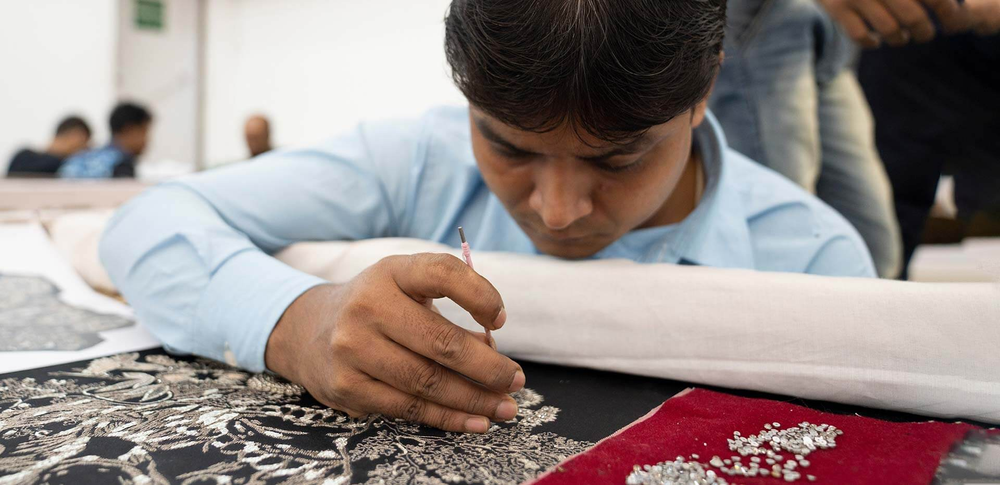
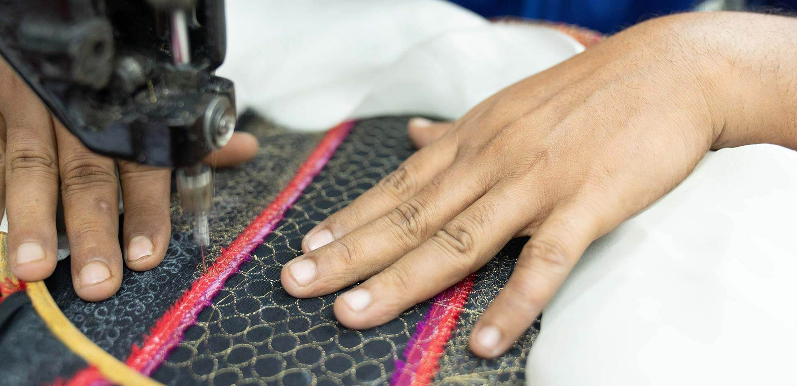
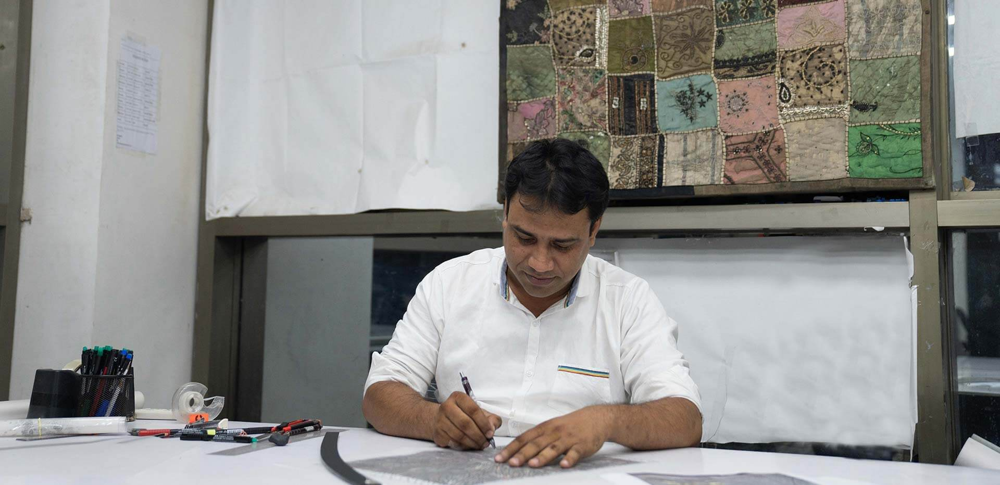
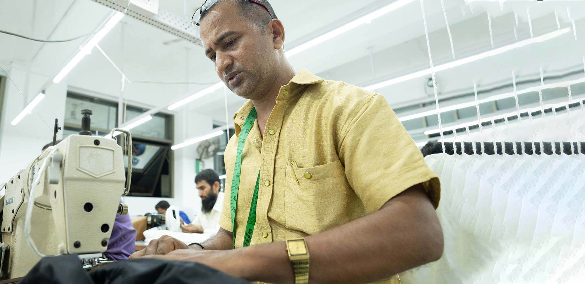
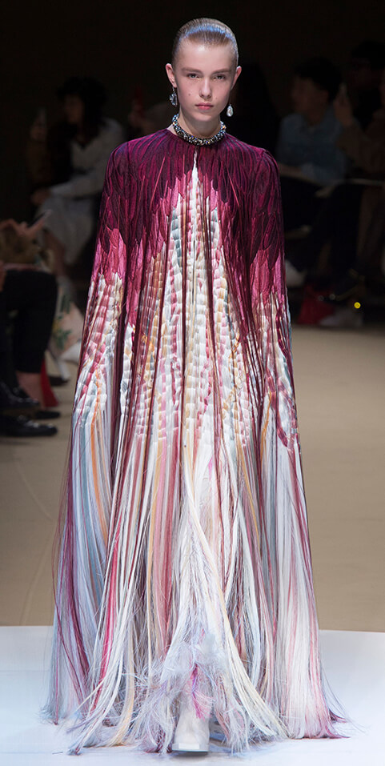
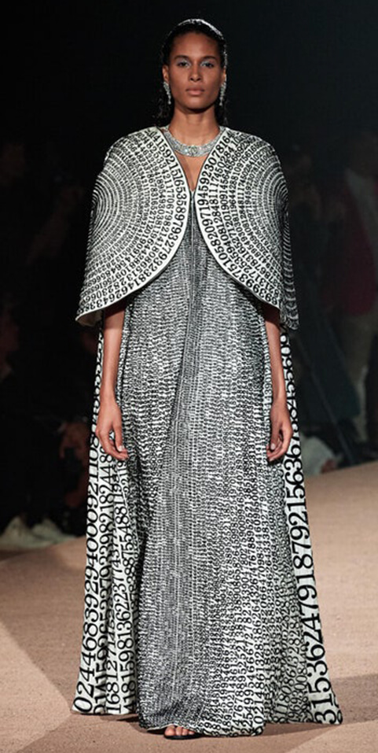
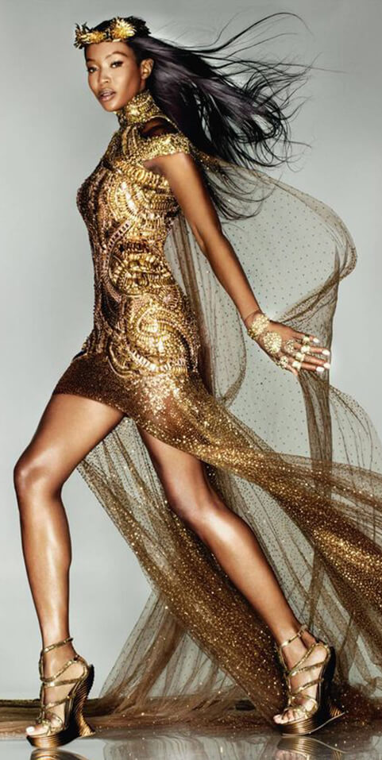
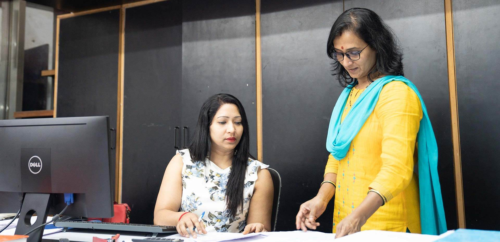
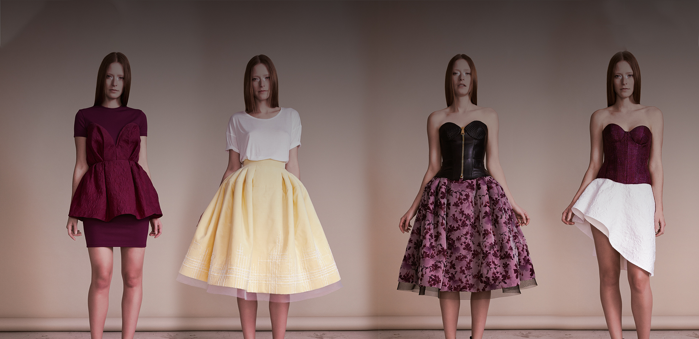

Each capsule traces a moment in couture embellishment—from gilded zari beginnings to contemporary crystal engineering. Designers, historians, and curators may request private appointments to study the pieces in person.









Timeline of the maison
Farruch atelier is founded; early zari relics enter archival safekeeping.
Zafer Zariwala relocates the atelier to Mumbai, laying the groundwork for today’s tower.
Collaborations with European couture houses expand, bringing new techniques into the archive.
Farruch & Embroideries Pvt Ltd is formed, codifying ethics and sustainability charters.
Farruch co-founds the UTTHAN program with leading luxury groups to uplift embroidery karigars.
Digital archiving begins—swatches captured in 8K detail for secure remote study.
Request an archive immersion.
Historians, designers, and stylists may schedule a curated viewing of swatches, technical notes, and archival runway footage.
Enquire now